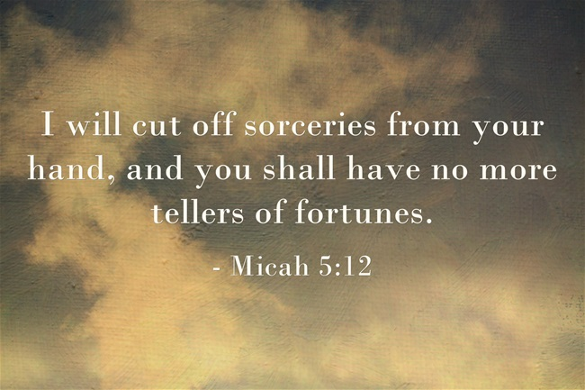
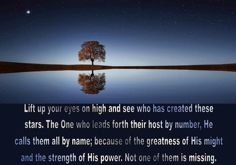

Then God said, “Let there be lights in the expanse of the heavens to separate the day from the night, and let them be for signs and for seasons and for days and years”
~ Genesis 1:14
Astrology and the Church have always been uneasy bedfellows, though there are various references throughout biblical texts to working with the Sun, Moon and Stars. Many religious people these days are more open minded, realising that it is simply a language to understand what may be happening in our lives at any point.
However, many more people still relegate Astrology to devilish fortune telling and predictive work such as monthly horoscopes are still thought to be evil in nature. It can be unsettling, of course, when someone familiar with Astrology can tell someone who is not familiar, what their most personal qualities are, or what may come up in the future, especially when the prediction turns out to be true!
However, Astrology is not a magic, wishy-washy, psychic trick. It simply involves learning the symbology of the planets and putting it all together rather rationally, much like learning a language. It’s a language of the cosmos, and may be seen to be imparted to mankind to help us navigate and understand the chaotic order of the Universe. As famous Astrologer, Robert Zoller said:
“It is not merely a system of fortune telling, nor yet a science devoid of spiritual import. It is divination in the ancient and true sense –the art of communicating with and eventually coming to know the Divine.” ~
The Church’s relationship to Astrology in the Past
Astrology has gone through many deaths and re-births, and is currently back in an “upswing”. The most recent time period that Astrology was popular was at the birth of the Renaissance, when the Cosmos was reflected in the art and literature of that time and Astrology and Astronomy was blended and learnt in Universities.
Astrologers famously held court with royalty, and were consulted in all important matters of state. It was common knowledge that Kings and Queens would consult an Astrologer before battles, marriages and other important decisions. Of course, with the rise of the Church around the 1700’s, Astrology began to be seen by the priesthood to be far too powerful, too influential and so the Church set about destroying the reputation of Astrology.
However, it wasn’t only the Church’s influence, as people around that time began questioning all kinds of authority in general, including religious leadership as well as Astrology. The illustrious period that Astrology had enjoyed thus far had come to an end, and to this day, still has remnants of being a craft for witches and psychics, rather than for learned scholars that it always was.
The Bible and Astrology
The Bible has a difficult relationship to Astrology. There are various conflicting biblical quotes which creates conflict for most staunch believers.
For example, when Jesus was born, the Three Wise Men, ostensibly from Asia where Persian Astrology was very developed, sighted a “star in the sky” which led them to believe a King had been born. Modern Astrologers attribute this Star as the joining of the planet Jupiter and Venus in a particular constellation, which, over many years of recording other, similar configurations, has been shown to mean that someone born at this exact time and place had the potential to be a great leader. The quote goes as follows:
Now after Jesus was born in Bethlehem of Judea in the days of Herod the king, magi from the east arrived in Jerusalem, saying, “Where is He who has been born King of the Jews? For we saw His star in the east and have come to worship Him.”
~ Matthew 2:1-2
Also, it goes on to say:
“When they saw the star, they rejoiced exceedingly with great joy.”
~ Matthew 2:10
However, when we consult the Old Testament, frightening quotes clearly outline how Astrology was expressly forbidden –
‘You shall not eat anything with the blood, nor practice divination or soothsaying.
~Leviticus 19:26
“”There shall not be found among you anyone who makes his son or his daughter pass through the fire, one who uses divination, one who practices witchcraft, or one who interprets omens, or a sorcerer, or one who casts a spell, or a medium, or a spiritist, or one who calls up the dead.
~Deuteronomy 18:9-11
Then, we have some other conflicting quotes such as:
“When I consider Your heavens, the work of Your fingers, the moon and the stars, which You have ordained;”
~Psalm 8:3
And so, whilst Astrology has been acknowledged as very real and possessing power in the holy texts, believers are warned to stay away, at least until the coming of Jesus.
Can Astrology work with Christianity?
Most modern Churches have begun to accept previously forbidden lifestyles, such as opening their doors to LGBQT communities, divorcees as well as those who read the stars or practice Tarot. There are many practicing Christian Astrologers around and Astrology has begun to be seen and accepted as a spiritual reality, and at best, able to help people to understand their purpose and themselves better.
In some way, Astrologers have become the world’s modern priesthood, guiding others to find a way back to God/The Divine, acknowledging that all creation comes from the Divine, and that we are gifted with these tools to help rather than harm us. Recent studies state that almost 30% of Catholics believe in Astrology, and many Christians state that they feel more connected to their God through Astrology, coming to know his Divine will and being able to hence go with the flow more easily.
And perhaps the meaning of the old, “scary” verses was more about not allowing oneself to put astrology before the Divine, but to know that this tool comes from the Creator as a way to help mankind.
After all, as Jesus said to his disciples when they wanted to know about his return:
“There will be signs in sun and moon and stars, and on the earth dismay among nations, in perplexity at the roaring of the sea and the waves,”
~Luke 21:25
← Back to All Posts